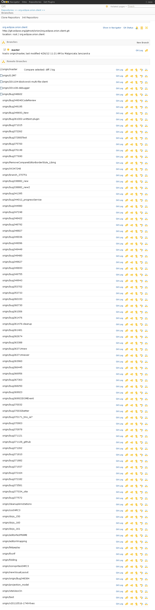

<map name="map">
<!-- #$-:Image map file created by GIMP Image Map plug-in -->
<!-- #$-:GIMP Image Map plug-in by Maurits Rijk -->
<!-- #$-:Please do not edit lines starting with "#$" -->
<!-- #$VERSION:2.3 -->
<!-- #$AUTHOR:tzarna -->
<area shape="rect" coords="156,3,240,24" href="git-repositories.html" />
<area shape="rect" coords="9,144,161,162" href="git-repository.html" />
<area shape="rect" coords="253,380,281,400" href="git-branches-diff.html" />
<area shape="rect" coords="283,379,334,399" href="git-branches-log.html" />
<area shape="rect" coords="691,138,761,168" href="git-status.html" />
<area shape="rect" coords="100,47,270,67" href="git-repository.html" />
<area shape="rect" coords="4,46,83,63" href="git-repositories.html" />
</map>
